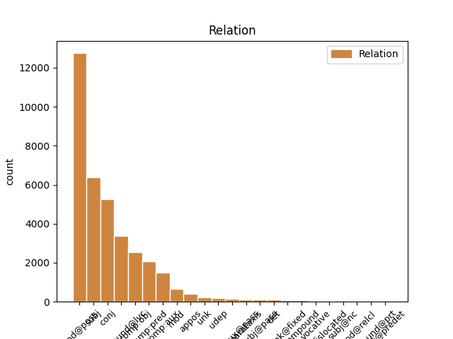
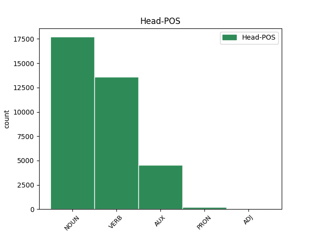
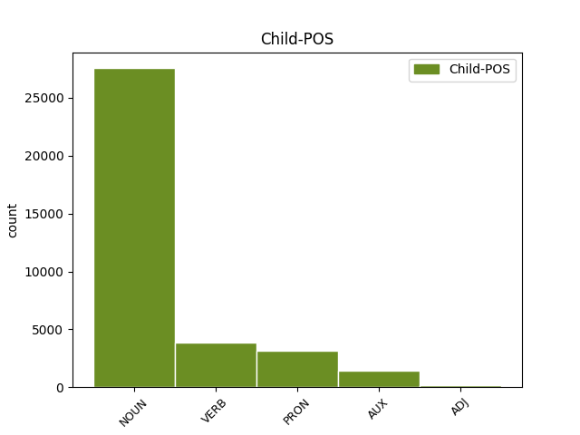

Distribution of features within this leaf



Agreement Rules sorted by frequency.
- When the dependent token is the modifer(mod@poss) of the head token,
1 دکتر _ _ _ _ 0 _ _ _
2 یوسفنیا _ _ _ _ 0 _ _ _
3 اظهار _ _ _ _ 0 _ _ _
4 داشت _ _ _ _ 0 _ _ _
5 : _ _ _ _ 0 _ _ _
6 اطلاعرسانی _ _ _ _ 0 _ _ _
7 مستمر _ _ _ _ 0 _ _ _
8 در _ _ _ _ 0 _ _ _
9 زمینه زمینه NOUN N_SING Number=Sing 0 _ _ _
10 پیشگیری پیشگیری NOUN N_SING Number=Sing 9 mod@poss _ _
11 از _ _ _ _ 0 _ _ _
12 بیماریهای _ _ _ _ 0 _ _ _
13 قلبی _ _ _ _ 0 _ _ _
14 ضروریترین _ _ _ _ 0 _ _ _
15 کاری _ _ _ _ 0 _ _ _
16 است _ _ _ _ 0 _ _ _
17 که _ _ _ _ 0 _ _ _
18 میتوان _ _ _ _ 0 _ _ _
19 در _ _ _ _ 0 _ _ _
20 این _ _ _ _ 0 _ _ _
21 خصوص _ _ _ _ 0 _ _ _
22 انجام _ _ _ _ 0 _ _ _
23 داد _ _ _ _ 0 _ _ _
24 . _ _ _ _ 0 _ _ _
1 دکتر _ _ _ _ 0 _ _ _
2 یوسفنیا _ _ _ _ 0 _ _ _
3 اظهار _ _ _ _ 0 _ _ _
4 داشت _ _ _ _ 0 _ _ _
5 : _ _ _ _ 0 _ _ _
6 اطلاعرسانی اطلاعرسانی NOUN N_SING Number=Sing 16 subj _ _
7 مستمر _ _ _ _ 0 _ _ _
8 در _ _ _ _ 0 _ _ _
9 زمینه _ _ _ _ 0 _ _ _
10 پیشگیری _ _ _ _ 0 _ _ _
11 از _ _ _ _ 0 _ _ _
12 بیماریهای _ _ _ _ 0 _ _ _
13 قلبی _ _ _ _ 0 _ _ _
14 ضروریترین _ _ _ _ 0 _ _ _
15 کاری _ _ _ _ 0 _ _ _
16 است است AUX V_PRS Number=Sing|Person=3|Tense=Pres 0 _ _ _
17 که _ _ _ _ 0 _ _ _
18 میتوان _ _ _ _ 0 _ _ _
19 در _ _ _ _ 0 _ _ _
20 این _ _ _ _ 0 _ _ _
21 خصوص _ _ _ _ 0 _ _ _
22 انجام _ _ _ _ 0 _ _ _
23 داد _ _ _ _ 0 _ _ _
24 . _ _ _ _ 0 _ _ _
1 وی _ _ _ _ 0 _ _ _
2 افزود _ _ _ _ 0 _ _ _
3 : _ _ _ _ 0 _ _ _
4 الگوی _ _ _ _ 0 _ _ _
5 غذایی _ _ _ _ 0 _ _ _
6 نامناسب _ _ _ _ 0 _ _ _
7 مردم _ _ _ _ 0 _ _ _
8 باید _ _ _ _ 0 _ _ _
9 مورد _ _ _ _ 0 _ _ _
10 بازنگری _ _ _ _ 0 _ _ _
11 اساسی _ _ _ _ 0 _ _ _
12 قرار _ _ _ _ 0 _ _ _
13 گرفته گرفت#گیر VERB V_PP Number=Sing|Person=3|VerbForm=Part 0 _ _ _
14 و _ _ _ _ 0 _ _ _
15 سبزیجات _ _ _ _ 0 _ _ _
16 تازه _ _ _ _ 0 _ _ _
17 ، _ _ _ _ 0 _ _ _
18 میوه _ _ _ _ 0 _ _ _
19 و _ _ _ _ 0 _ _ _
20 لبنیات _ _ _ _ 0 _ _ _
21 جایگزین _ _ _ _ 0 _ _ _
22 استفاده _ _ _ _ 0 _ _ _
23 از _ _ _ _ 0 _ _ _
24 انواع _ _ _ _ 0 _ _ _
25 چربیها _ _ _ _ 0 _ _ _
26 شود کرد#کن AUX V_SUB Mood=Sub|Number=Sing|Person=3|Tense=Pres 13 conj _ SpaceAfter=No
27 . _ _ _ _ 0 _ _ _
1 دکتر _ _ _ _ 0 _ _ _
2 یوسفنیا _ _ _ _ 0 _ _ _
3 اظهار _ _ _ _ 0 _ _ _
4 داشت _ _ _ _ 0 _ _ _
5 : _ _ _ _ 0 _ _ _
6 اطلاعرسانی _ _ _ _ 0 _ _ _
7 مستمر _ _ _ _ 0 _ _ _
8 در _ _ _ _ 0 _ _ _
9 زمینه _ _ _ _ 0 _ _ _
10 پیشگیری _ _ _ _ 0 _ _ _
11 از _ _ _ _ 0 _ _ _
12 بیماریهای _ _ _ _ 0 _ _ _
13 قلبی _ _ _ _ 0 _ _ _
14 ضروریترین _ _ _ _ 0 _ _ _
15 کاری _ _ _ _ 0 _ _ _
16 است _ _ _ _ 0 _ _ _
17 که _ _ _ _ 0 _ _ _
18 میتوان _ _ _ _ 0 _ _ _
19 در _ _ _ _ 0 _ _ _
20 این _ _ _ _ 0 _ _ _
21 خصوص _ _ _ _ 0 _ _ _
22 انجام انجام NOUN N_SING Number=Sing 23 compound@lvc _ _
23 داد داد#ده VERB V_PA Number=Sing|Person=3|Tense=Past 0 _ _ _
24 . _ _ _ _ 0 _ _ _
1 دکتر _ _ _ _ 0 _ _ _
2 یوسفنیا _ _ _ _ 0 _ _ _
3 اظهار _ _ _ _ 0 _ _ _
4 داشت _ _ _ _ 0 _ _ _
5 : _ _ _ _ 0 _ _ _
6 اطلاعرسانی _ _ _ _ 0 _ _ _
7 مستمر _ _ _ _ 0 _ _ _
8 در _ _ _ _ 0 _ _ _
9 زمینه _ _ _ _ 0 _ _ _
10 پیشگیری _ _ _ _ 0 _ _ _
11 از _ _ _ _ 0 _ _ _
12 بیماریهای _ _ _ _ 0 _ _ _
13 قلبی _ _ _ _ 0 _ _ _
14 ضروریترین _ _ _ _ 0 _ _ _
15 کاری کار NOUN N_SING Number=Sing 16 comp:pred _ _
16 است است AUX V_PRS Number=Sing|Person=3|Tense=Pres 0 _ _ _
17 که _ _ _ _ 0 _ _ _
18 میتوان _ _ _ _ 0 _ _ _
19 در _ _ _ _ 0 _ _ _
20 این _ _ _ _ 0 _ _ _
21 خصوص _ _ _ _ 0 _ _ _
22 انجام _ _ _ _ 0 _ _ _
23 داد _ _ _ _ 0 _ _ _
24 . _ _ _ _ 0 _ _ _
1 دکتر _ _ _ _ 0 _ _ _
2 یوسفنیا _ _ _ _ 0 _ _ _
3 اظهار _ _ _ _ 0 _ _ _
4 داشت داشت#دار VERB V_PA Number=Sing|Person=3|Tense=Past 0 _ _ _
5 : _ _ _ _ 0 _ _ _
6 اطلاعرسانی _ _ _ _ 0 _ _ _
7 مستمر _ _ _ _ 0 _ _ _
8 در _ _ _ _ 0 _ _ _
9 زمینه _ _ _ _ 0 _ _ _
10 پیشگیری _ _ _ _ 0 _ _ _
11 از _ _ _ _ 0 _ _ _
12 بیماریهای _ _ _ _ 0 _ _ _
13 قلبی _ _ _ _ 0 _ _ _
14 ضروریترین _ _ _ _ 0 _ _ _
15 کاری _ _ _ _ 0 _ _ _
16 است است AUX V_PRS Number=Sing|Person=3|Tense=Pres 4 comp:obj _ _
17 که _ _ _ _ 0 _ _ _
18 میتوان _ _ _ _ 0 _ _ _
19 در _ _ _ _ 0 _ _ _
20 این _ _ _ _ 0 _ _ _
21 خصوص _ _ _ _ 0 _ _ _
22 انجام _ _ _ _ 0 _ _ _
23 داد _ _ _ _ 0 _ _ _
24 . _ _ _ _ 0 _ _ _
1 گزارش _ _ _ _ 0 _ _ _
2 دفتر _ _ _ _ 0 _ _ _
3 همآهنگکننده _ _ _ _ 0 _ _ _
4 امور _ _ _ _ 0 _ _ _
5 بشردوستانه _ _ _ _ 0 _ _ _
6 سازمان _ _ _ _ 0 _ _ _
7 ملل _ _ _ _ 0 _ _ _
8 میگوید _ _ _ _ 0 _ _ _
9 : _ _ _ _ 0 _ _ _
10 در _ _ _ _ 0 _ _ _
11 زمینه _ _ _ _ 0 _ _ _
12 کمکهای _ _ _ _ 0 _ _ _
13 بینالمللی _ _ _ _ 0 _ _ _
14 نیز _ _ _ _ 0 _ _ _
15 دولت _ _ _ _ 0 _ _ _
16 ایران _ _ _ _ 0 _ _ _
17 به _ _ _ _ 0 _ _ _
18 دفتر _ _ _ _ 0 _ _ _
19 سازمان _ _ _ _ 0 _ _ _
20 ملل _ _ _ _ 0 _ _ _
21 در _ _ _ _ 0 _ _ _
22 تهران _ _ _ _ 0 _ _ _
23 اطلاع _ _ _ _ 0 _ _ _
24 داده داد#ده VERB V_PP Number=Sing|Person=3|VerbForm=Part 25 comp:aux _ _
25 است است VERB V_PRS Number=Sing|Person=3|Tense=Pres 0 _ _ _
26 که _ _ _ _ 0 _ _ _
27 امکان _ _ _ _ 0 _ _ _
28 پذیرش _ _ _ _ 0 _ _ _
29 این _ _ _ _ 0 _ _ _
30 گونه _ _ _ _ 0 _ _ _
31 کمکها _ _ _ _ 0 _ _ _
32 جهت _ _ _ _ 0 _ _ _
33 حمایت _ _ _ _ 0 _ _ _
34 از _ _ _ _ 0 _ _ _
35 تلاشهای _ _ _ _ 0 _ _ _
36 امدادی _ _ _ _ 0 _ _ _
37 مراجع _ _ _ _ 0 _ _ _
38 ذیربط _ _ _ _ 0 _ _ _
39 داخلی _ _ _ _ 0 _ _ _
40 وجود _ _ _ _ 0 _ _ _
41 دارد _ _ _ _ 0 _ _ _
42 . _ _ _ _ 0 _ _ _
1 این _ _ _ _ 0 _ _ _
2 گزارش _ _ _ _ 0 _ _ _
3 میگوید _ _ _ _ 0 _ _ _
4 : _ _ _ _ 0 _ _ _
5 وزارت _ _ _ _ 0 _ _ _
6 کشور _ _ _ _ 0 _ _ _
7 ایران _ _ _ _ 0 _ _ _
8 اعلام _ _ _ _ 0 _ _ _
9 کرده _ _ _ _ 0 _ _ _
10 است _ _ _ _ 0 _ _ _
11 ، _ _ _ _ 0 _ _ _
12 که _ _ _ _ 0 _ _ _
13 مبلغی _ _ _ _ 0 _ _ _
14 معادل _ _ _ _ 0 _ _ _
15 ۲۰۰ _ _ _ _ 0 _ _ _
16 میلیون _ _ _ _ 0 _ _ _
17 دلار دلار NOUN N_SING Number=Sing 18 mod _ _
18 کمک کمک NOUN N_SING Number=Sing 0 _ _ _
19 فوری _ _ _ _ 0 _ _ _
20 مورد _ _ _ _ 0 _ _ _
21 نیاز _ _ _ _ 0 _ _ _
22 است _ _ _ _ 0 _ _ _
23 و _ _ _ _ 0 _ _ _
24 تا _ _ _ _ 0 _ _ _
25 کنون _ _ _ _ 0 _ _ _
26 نیز _ _ _ _ 0 _ _ _
27 دولت _ _ _ _ 0 _ _ _
28 ایران _ _ _ _ 0 _ _ _
29 یک _ _ _ _ 0 _ _ _
30 مجموعه _ _ _ _ 0 _ _ _
31 کمک _ _ _ _ 0 _ _ _
32 اضطراری _ _ _ _ 0 _ _ _
33 معادل _ _ _ _ 0 _ _ _
34 ۳۸۱ _ _ _ _ 0 _ _ _
35 میلیون _ _ _ _ 0 _ _ _
36 دلار _ _ _ _ 0 _ _ _
37 جهت _ _ _ _ 0 _ _ _
38 کمک _ _ _ _ 0 _ _ _
39 به _ _ _ _ 0 _ _ _
40 کشاورزان _ _ _ _ 0 _ _ _
41 خسارتدیده _ _ _ _ 0 _ _ _
42 از _ _ _ _ 0 _ _ _
43 خشکسالی _ _ _ _ 0 _ _ _
44 تصویب _ _ _ _ 0 _ _ _
45 نموده _ _ _ _ 0 _ _ _
46 است _ _ _ _ 0 _ _ _
47 . _ _ _ _ 0 _ _ _
1 در _ _ _ _ 0 _ _ _
2 این _ _ _ _ 0 _ _ _
3 دیدار _ _ _ _ 0 _ _ _
4 آقازاده آقازاده NOUN N_SING Number=Sing 0 _ _ _
5 رئیس رئیس NOUN N_SING Number=Sing 4 appos _ _
6 سازمان _ _ _ _ 0 _ _ _
7 انرژی _ _ _ _ 0 _ _ _
8 اتمی _ _ _ _ 0 _ _ _
9 از _ _ _ _ 0 _ _ _
10 کمکهای _ _ _ _ 0 _ _ _
11 آژانس _ _ _ _ 0 _ _ _
12 به _ _ _ _ 0 _ _ _
13 ایران _ _ _ _ 0 _ _ _
14 در _ _ _ _ 0 _ _ _
15 مورد _ _ _ _ 0 _ _ _
16 ایمنی _ _ _ _ 0 _ _ _
17 نیروگاه _ _ _ _ 0 _ _ _
18 بوشهر _ _ _ _ 0 _ _ _
19 تشکر _ _ _ _ 0 _ _ _
20 کرد _ _ _ _ 0 _ _ _
21 و _ _ _ _ 0 _ _ _
22 گفت _ _ _ _ 0 _ _ _
23 : _ _ _ _ 0 _ _ _
24 دولت _ _ _ _ 0 _ _ _
25 ایران _ _ _ _ 0 _ _ _
26 مایل _ _ _ _ 0 _ _ _
27 است _ _ _ _ 0 _ _ _
28 از _ _ _ _ 0 _ _ _
29 کمکهای _ _ _ _ 0 _ _ _
30 فنی _ _ _ _ 0 _ _ _
31 بیشتری _ _ _ _ 0 _ _ _
32 بهرهمند _ _ _ _ 0 _ _ _
33 شود _ _ _ _ 0 _ _ _
34 . _ _ _ _ 0 _ _ _
1 ولی _ _ _ _ 0 _ _ _
2 همین _ _ _ _ 0 _ _ _
3 قرآن قرآن NOUN N_SING Number=Sing 17 unk _ _
4 نوبت _ _ _ _ 0 _ _ _
5 به _ _ _ _ 0 _ _ _
6 مشرکین _ _ _ _ 0 _ _ _
7 که _ _ _ _ 0 _ _ _
8 میرسد _ _ _ _ 0 _ _ _
9 ، _ _ _ _ 0 _ _ _
10 دیگر _ _ _ _ 0 _ _ _
11 در _ _ _ _ 0 _ _ _
12 آغاز _ _ _ _ 0 _ _ _
13 سوره _ _ _ _ 0 _ _ _
14 این _ _ _ _ 0 _ _ _
15 جمله _ _ _ _ 0 _ _ _
16 وجود _ _ _ _ 0 _ _ _
17 نداشته داشت#دار VERB V_PP Number=Sing|Person=3|Polarity=Neg|VerbForm=Part 0 _ _ _
18 ، _ _ _ _ 0 _ _ _
19 بلکه _ _ _ _ 0 _ _ _
20 میفرماید _ _ _ _ 0 _ _ _
21 : _ _ _ _ 0 _ _ _
22 برااث _ _ _ _ 0 _ _ _
23 من _ _ _ _ 0 _ _ _
24 الله _ _ _ _ 0 _ _ _
25 و _ _ _ _ 0 _ _ _
26 رسوله _ _ _ _ 0 _ _ _
27 الی _ _ _ _ 0 _ _ _
28 الذین _ _ _ _ 0 _ _ _
29 عاهدتم _ _ _ _ 0 _ _ _
30 من _ _ _ _ 0 _ _ _
31 المشرکین _ _ _ _ 0 _ _ _
32 . _ _ _ _ 0 _ _ _
1 آقازاده _ _ _ _ 0 _ _ _
2 اضافه _ _ _ _ 0 _ _ _
3 کرد _ _ _ _ 0 _ _ _
4 : _ _ _ _ 0 _ _ _
5 سازمان _ _ _ _ 0 _ _ _
6 انرژی _ _ _ _ 0 _ _ _
7 اتمی _ _ _ _ 0 _ _ _
8 ایران _ _ _ _ 0 _ _ _
9 درخواست _ _ _ _ 0 _ _ _
10 میکند _ _ _ _ 0 _ _ _
11 که _ _ _ _ 0 _ _ _
12 مرکز _ _ _ _ 0 _ _ _
13 کرج _ _ _ _ 0 _ _ _
14 به _ _ _ _ 0 _ _ _
15 عنوان _ _ _ _ 0 _ _ _
16 یکی _ _ _ _ 0 _ _ _
17 از _ _ _ _ 0 _ _ _
18 مراکز _ _ _ _ 0 _ _ _
19 کمکهای _ _ _ _ 0 _ _ _
20 فنی _ _ _ _ 0 _ _ _
21 آژانس _ _ _ _ 0 _ _ _
22 در _ _ _ _ 0 _ _ _
23 زمینه _ _ _ _ 0 _ _ _
24 کشاورزی _ _ _ _ 0 _ _ _
25 و _ _ _ _ 0 _ _ _
26 پزشکی _ _ _ _ 0 _ _ _
27 منطقه _ _ _ _ 0 _ _ _
28 شناخته شناخت#شناس VERB V_PP Number=Sing|Person=3|VerbForm=Part 29 comp:aux@pass _ _
29 شود کرد#کن VERB V_SUB Mood=Sub|Number=Sing|Person=3|Tense=Pres 0 _ _ _
30 . _ _ _ _ 0 _ _ _
1 بار بار NOUN N_SING Number=Sing 31 udep _ _
2 دیگر _ _ _ _ 0 _ _ _
3 به _ _ _ _ 0 _ _ _
4 این _ _ _ _ 0 _ _ _
5 مألف _ _ _ _ 0 _ _ _
6 محترم _ _ _ _ 0 _ _ _
7 که _ _ _ _ 0 _ _ _
8 با _ _ _ _ 0 _ _ _
9 اثر _ _ _ _ 0 _ _ _
10 ارزشمند _ _ _ _ 0 _ _ _
11 خود _ _ _ _ 0 _ _ _
12 علما _ _ _ _ 0 _ _ _
13 و _ _ _ _ 0 _ _ _
14 فضلای _ _ _ _ 0 _ _ _
15 هند _ _ _ _ 0 _ _ _
16 را _ _ _ _ 0 _ _ _
17 مرهون _ _ _ _ 0 _ _ _
18 منت _ _ _ _ 0 _ _ _
19 خویش _ _ _ _ 0 _ _ _
20 قرار _ _ _ _ 0 _ _ _
21 داده _ _ _ _ 0 _ _ _
22 است _ _ _ _ 0 _ _ _
23 ، _ _ _ _ 0 _ _ _
24 صمیمانهترین _ _ _ _ 0 _ _ _
25 درود _ _ _ _ 0 _ _ _
26 و _ _ _ _ 0 _ _ _
27 سپاس _ _ _ _ 0 _ _ _
28 خود _ _ _ _ 0 _ _ _
29 را _ _ _ _ 0 _ _ _
30 ابراز _ _ _ _ 0 _ _ _
31 میکنم کرد#کن VERB V_PRS Number=Sing|Person=1|Tense=Pres 0 _ _ _
32 . _ _ _ _ 0 _ _ _
1 نیویورک نیویورک NOUN N_SING Number=Sing 0 _ _ _
2 - _ _ _ _ 0 _ _ _
3 ایرنا ایرنا NOUN N_SING Number=Sing 1 parataxis _ SpaceAfter=No
4 : _ _ _ _ 0 _ _ _
1 آقازاده _ _ _ _ 0 _ _ _
2 اضافه _ _ _ _ 0 _ _ _
3 کرد _ _ _ _ 0 _ _ _
4 : _ _ _ _ 0 _ _ _
5 سازمان _ _ _ _ 0 _ _ _
6 انرژی _ _ _ _ 0 _ _ _
7 اتمی _ _ _ _ 0 _ _ _
8 ایران _ _ _ _ 0 _ _ _
9 درخواست _ _ _ _ 0 _ _ _
10 میکند _ _ _ _ 0 _ _ _
11 که _ _ _ _ 0 _ _ _
12 مرکز مرکز NOUN N_SING Number=Sing 29 subj@pass _ _
13 کرج _ _ _ _ 0 _ _ _
14 به _ _ _ _ 0 _ _ _
15 عنوان _ _ _ _ 0 _ _ _
16 یکی _ _ _ _ 0 _ _ _
17 از _ _ _ _ 0 _ _ _
18 مراکز _ _ _ _ 0 _ _ _
19 کمکهای _ _ _ _ 0 _ _ _
20 فنی _ _ _ _ 0 _ _ _
21 آژانس _ _ _ _ 0 _ _ _
22 در _ _ _ _ 0 _ _ _
23 زمینه _ _ _ _ 0 _ _ _
24 کشاورزی _ _ _ _ 0 _ _ _
25 و _ _ _ _ 0 _ _ _
26 پزشکی _ _ _ _ 0 _ _ _
27 منطقه _ _ _ _ 0 _ _ _
28 شناخته _ _ _ _ 0 _ _ _
29 شود کرد#کن VERB V_SUB Mood=Sub|Number=Sing|Person=3|Tense=Pres 0 _ _ _
30 . _ _ _ _ 0 _ _ _
1 تقی _ _ _ _ 0 _ _ _
2 اوحدی _ _ _ _ 0 _ _ _
3 دربارهٔ _ _ _ _ 0 _ _ _
4 صالح _ _ _ _ 0 _ _ _
5 مینگارد _ _ _ _ 0 _ _ _
6 : _ _ _ _ 0 _ _ _
7 در _ _ _ _ 0 _ _ _
8 ین _ _ _ _ 0 _ _ _
9 ازمنه _ _ _ _ 0 _ _ _
10 ، _ _ _ _ 0 _ _ _
11 صالح صالح NOUN N_SING Number=Sing 0 _ _ _
12 نامی نامی NOUN N_SING Number=Sing 11 unk@fixed _ _
13 در _ _ _ _ 0 _ _ _
14 هند _ _ _ _ 0 _ _ _
15 موجود _ _ _ _ 0 _ _ _
16 است _ _ _ _ 0 _ _ _
17 . _ _ _ _ 0 _ _ _
1 به _ _ _ _ 0 _ _ _
2 گفته _ _ _ _ 0 _ _ _
3 این _ _ _ _ 0 _ _ _
4 عضو _ _ _ _ 0 _ _ _
5 هیئت _ _ _ _ 0 _ _ _
6 علمی _ _ _ _ 0 _ _ _
7 ، _ _ _ _ 0 _ _ _
8 این _ _ _ _ 0 _ _ _
9 آتشفشان _ _ _ _ 0 _ _ _
10 از _ _ _ _ 0 _ _ _
11 شکافی _ _ _ _ 0 _ _ _
12 به _ _ _ _ 0 _ _ _
13 طول _ _ _ _ 0 _ _ _
14 ۴۰ _ _ _ _ 0 _ _ _
15 کیلومتر _ _ _ _ 0 _ _ _
16 با _ _ _ _ 0 _ _ _
17 درجه _ _ _ _ 0 _ _ _
18 حرارت _ _ _ _ 0 _ _ _
19 یک _ _ _ _ 0 _ _ _
20 هزار _ _ _ _ 0 _ _ _
21 و _ _ _ _ 0 _ _ _
22 ۶۰۰ _ _ _ _ 0 _ _ _
23 واحد _ _ _ _ 0 _ _ _
24 کلوین _ _ _ _ 0 _ _ _
25 در _ _ _ _ 0 _ _ _
26 ستونی _ _ _ _ 0 _ _ _
27 به _ _ _ _ 0 _ _ _
28 ارتفاع ارتفاع NOUN N_SING Number=Sing 0 _ _ _
29 ۱ _ _ _ _ 0 _ _ _
30 / _ _ _ _ 0 _ _ _
31 ۵ _ _ _ _ 0 _ _ _
32 کیلومتر کیلومتر NOUN N_SING Number=Sing 28 compound _ _
33 فوران _ _ _ _ 0 _ _ _
34 میکند _ _ _ _ 0 _ _ _
35 . _ _ _ _ 0 _ _ _
1 این _ _ _ _ 0 _ _ _
2 گزارش _ _ _ _ 0 _ _ _
3 میگوید _ _ _ _ 0 _ _ _
4 : _ _ _ _ 0 _ _ _
5 وزارت _ _ _ _ 0 _ _ _
6 کشور _ _ _ _ 0 _ _ _
7 ایران _ _ _ _ 0 _ _ _
8 اعلام _ _ _ _ 0 _ _ _
9 کرده _ _ _ _ 0 _ _ _
10 است _ _ _ _ 0 _ _ _
11 ، _ _ _ _ 0 _ _ _
12 که _ _ _ _ 0 _ _ _
13 مبلغی _ _ _ _ 0 _ _ _
14 معادل _ _ _ _ 0 _ _ _
15 ۲۰۰ _ _ _ _ 0 _ _ _
16 میلیون _ _ _ _ 0 _ _ _
17 دلار _ _ _ _ 0 _ _ _
18 کمک _ _ _ _ 0 _ _ _
19 فوری _ _ _ _ 0 _ _ _
20 مورد _ _ _ _ 0 _ _ _
21 نیاز _ _ _ _ 0 _ _ _
22 است _ _ _ _ 0 _ _ _
23 و _ _ _ _ 0 _ _ _
24 تا _ _ _ _ 0 _ _ _
25 کنون _ _ _ _ 0 _ _ _
26 نیز _ _ _ _ 0 _ _ _
27 دولت _ _ _ _ 0 _ _ _
28 ایران _ _ _ _ 0 _ _ _
29 یک _ _ _ _ 0 _ _ _
30 مجموعه مجموعه NOUN N_SING Number=Sing 31 det _ _
31 کمک کمک NOUN N_SING Number=Sing 0 _ _ _
32 اضطراری _ _ _ _ 0 _ _ _
33 معادل _ _ _ _ 0 _ _ _
34 ۳۸۱ _ _ _ _ 0 _ _ _
35 میلیون _ _ _ _ 0 _ _ _
36 دلار _ _ _ _ 0 _ _ _
37 جهت _ _ _ _ 0 _ _ _
38 کمک _ _ _ _ 0 _ _ _
39 به _ _ _ _ 0 _ _ _
40 کشاورزان _ _ _ _ 0 _ _ _
41 خسارتدیده _ _ _ _ 0 _ _ _
42 از _ _ _ _ 0 _ _ _
43 خشکسالی _ _ _ _ 0 _ _ _
44 تصویب _ _ _ _ 0 _ _ _
45 نموده _ _ _ _ 0 _ _ _
46 است _ _ _ _ 0 _ _ _
47 . _ _ _ _ 0 _ _ _
1 ز _ _ _ _ 0 _ _ _
2 ین _ _ _ _ 0 _ _ _
3 میکده _ _ _ _ 0 _ _ _
4 ساقی ساقی NOUN N_SING Number=Sing 5 vocative _ _
5 بده داد#ده VERB V_IMP Mood=Imp|Number=Sing|Person=2 0 _ _ _
6 آن _ _ _ _ 0 _ _ _
7 باده _ _ _ _ 0 _ _ _
8 که _ _ _ _ 0 _ _ _
9 گویی _ _ _ _ 0 _ _ _
10 ، _ _ _ _ 0 _ _ _
11 در _ _ _ _ 0 _ _ _
12 دیدهٔ _ _ _ _ 0 _ _ _
13 معشوق _ _ _ _ 0 _ _ _
14 همه _ _ _ _ 0 _ _ _
15 نایب _ _ _ _ 0 _ _ _
16 ناز _ _ _ _ 0 _ _ _
17 است _ _ _ _ 0 _ _ _
18 . _ _ _ _ 0 _ _ _
1 اگر _ _ _ _ 0 _ _ _
2 آقای _ _ _ _ 0 _ _ _
3 احمد _ _ _ _ 0 _ _ _
4 گلچین _ _ _ _ 0 _ _ _
5 معانی _ _ _ _ 0 _ _ _
6 بهتنهایی _ _ _ _ 0 _ _ _
7 نمیتواند _ _ _ _ 0 _ _ _
8 این _ _ _ _ 0 _ _ _
9 کار _ _ _ _ 0 _ _ _
10 را _ _ _ _ 0 _ _ _
11 به _ _ _ _ 0 _ _ _
12 انجام _ _ _ _ 0 _ _ _
13 رساند _ _ _ _ 0 _ _ _
14 ، _ _ _ _ 0 _ _ _
15 لازم _ _ _ _ 0 _ _ _
16 است _ _ _ _ 0 _ _ _
17 تعدادی _ _ _ _ 0 _ _ _
18 از _ _ _ _ 0 _ _ _
19 دانشمندان _ _ _ _ 0 _ _ _
20 زیر _ _ _ _ 0 _ _ _
21 نظر _ _ _ _ 0 _ _ _
22 وی _ _ _ _ 0 _ _ _
23 راجع _ _ _ _ 0 _ _ _
24 به _ _ _ _ 0 _ _ _
25 این _ _ _ _ 0 _ _ _
26 موضوع _ _ _ _ 0 _ _ _
27 مهم _ _ _ _ 0 _ _ _
28 کار _ _ _ _ 0 _ _ _
29 کنند _ _ _ _ 0 _ _ _
30 تا _ _ _ _ 0 _ _ _
31 شاعر شاعر NOUN N_SING Number=Sing 48 dislocated _ _
32 یا _ _ _ _ 0 _ _ _
33 عالمی _ _ _ _ 0 _ _ _
34 که _ _ _ _ 0 _ _ _
35 از _ _ _ _ 0 _ _ _
36 ایران _ _ _ _ 0 _ _ _
37 به _ _ _ _ 0 _ _ _
38 هند _ _ _ _ 0 _ _ _
39 آمده _ _ _ _ 0 _ _ _
40 نام _ _ _ _ 0 _ _ _
41 و _ _ _ _ 0 _ _ _
42 آثار _ _ _ _ 0 _ _ _
43 وی _ _ _ _ 0 _ _ _
44 در _ _ _ _ 0 _ _ _
45 کاروان _ _ _ _ 0 _ _ _
46 هند _ _ _ _ 0 _ _ _
47 ثبت _ _ _ _ 0 _ _ _
48 شود کرد#کن AUX V_SUB Mood=Sub|Number=Sing|Person=3|Tense=Pres 0 _ _ _
49 . _ _ _ _ 0 _ _ _
1 داستان _ _ _ _ 0 _ _ _
2 از _ _ _ _ 0 _ _ _
3 ین _ _ _ _ 0 _ _ _
4 قرار _ _ _ _ 0 _ _ _
5 است _ _ _ _ 0 _ _ _
6 که _ _ _ _ 0 _ _ _
7 ما _ _ _ _ 0 _ _ _
8 یک _ _ _ _ 0 _ _ _
9 همسایهای _ _ _ _ 0 _ _ _
10 داریم _ _ _ _ 0 _ _ _
11 در _ _ _ _ 0 _ _ _
12 نزدیکی _ _ _ _ 0 _ _ _
13 خانه _ _ _ _ 0 _ _ _
14 مان _ _ _ _ 0 _ _ _
15 که _ _ _ _ 0 _ _ _
16 مردی _ _ _ _ 0 _ _ _
17 نازنین _ _ _ _ 0 _ _ _
18 است _ _ _ _ 0 _ _ _
19 و _ _ _ _ 0 _ _ _
20 قالیفروشی _ _ _ _ 0 _ _ _
21 معتبری _ _ _ _ 0 _ _ _
22 دارد _ _ _ _ 0 _ _ _
23 ، _ _ _ _ 0 _ _ _
24 و _ _ _ _ 0 _ _ _
25 شعر _ _ _ _ 0 _ _ _
26 خوب _ _ _ _ 0 _ _ _
27 میفهمد _ _ _ _ 0 _ _ _
28 و _ _ _ _ 0 _ _ _
29 کتاب _ _ _ _ 0 _ _ _
30 خوب _ _ _ _ 0 _ _ _
31 میخواند _ _ _ _ 0 _ _ _
32 و _ _ _ _ 0 _ _ _
33 انسانیت _ _ _ _ 0 _ _ _
34 سر _ _ _ _ 0 _ _ _
35 ش او PRON PRO Number=Sing|Person=3|PronType=Prs 36 subj@nc _ _
36 میشود کرد#کن AUX V_PRS Number=Sing|Person=3|Tense=Pres 0 _ _ _
37 ، _ _ _ _ 0 _ _ _
38 و _ _ _ _ 0 _ _ _
39 سالی _ _ _ _ 0 _ _ _
40 یک _ _ _ _ 0 _ _ _
41 بار _ _ _ _ 0 _ _ _
42 چوب _ _ _ _ 0 _ _ _
43 فرشتگان _ _ _ _ 0 _ _ _
44 در _ _ _ _ 0 _ _ _
45 آسمانها _ _ _ _ 0 _ _ _
46 به _ _ _ _ 0 _ _ _
47 طبل _ _ _ _ 0 _ _ _
48 میخورد _ _ _ _ 0 _ _ _
49 و _ _ _ _ 0 _ _ _
50 او _ _ _ _ 0 _ _ _
51 یک _ _ _ _ 0 _ _ _
52 مهمانی _ _ _ _ 0 _ _ _
53 به _ _ _ _ 0 _ _ _
54 بعض _ _ _ _ 0 _ _ _
55 دوستان _ _ _ _ 0 _ _ _
56 و _ _ _ _ 0 _ _ _
57 همکاران _ _ _ _ 0 _ _ _
58 میدهد _ _ _ _ 0 _ _ _
59 . _ _ _ _ 0 _ _ _
1 ) _ _ _ _ 0 _ _ _
2 آسیای _ _ _ _ 0 _ _ _
3 هفتسنگ _ _ _ _ 0 _ _ _
4 ص _ _ _ _ 0 _ _ _
5 ۴۹۹ _ _ _ _ 0 _ _ _
6 ( _ _ _ _ 0 _ _ _
7 سفیر _ _ _ _ 0 _ _ _
8 صاحب _ _ _ _ 0 _ _ _
9 رأى _ _ _ _ 0 _ _ _
10 تونس _ _ _ _ 0 _ _ _
11 نیز _ _ _ _ 0 _ _ _
12 که _ _ _ _ 0 _ _ _
13 باد _ _ _ _ 0 _ _ _
14 لواسان _ _ _ _ 0 _ _ _
15 آن _ _ _ _ 0 _ _ _
16 روز _ _ _ _ 0 _ _ _
17 به _ _ _ _ 0 _ _ _
18 تن _ _ _ _ 0 _ _ _
19 او _ _ _ _ 0 _ _ _
20 خورد _ _ _ _ 0 _ _ _
21 ، _ _ _ _ 0 _ _ _
22 باز _ _ _ _ 0 _ _ _
23 بهتر _ _ _ _ 0 _ _ _
24 از _ _ _ _ 0 _ _ _
25 ما _ _ _ _ 0 _ _ _
26 میداند دانست#دان VERB V_PRS Number=Sing|Person=3|Tense=Pres 0 _ _ _
27 که _ _ _ _ 0 _ _ _
28 تاهرتی _ _ _ _ 0 _ _ _
29 سفیر _ _ _ _ 0 _ _ _
30 شمال _ _ _ _ 0 _ _ _
31 افریقا _ _ _ _ 0 _ _ _
32 اهل _ _ _ _ 0 _ _ _
33 تاهرت _ _ _ _ 0 _ _ _
34 شهر _ _ _ _ 0 _ _ _
35 مرزی _ _ _ _ 0 _ _ _
36 بین _ _ _ _ 0 _ _ _
37 تونس _ _ _ _ 0 _ _ _
38 افریقا _ _ _ _ 0 _ _ _
39 باز _ _ _ _ 0 _ _ _
40 وقتی _ _ _ _ 0 _ _ _
41 به _ _ _ _ 0 _ _ _
42 درگاه _ _ _ _ 0 _ _ _
43 سلطان _ _ _ _ 0 _ _ _
44 محمود _ _ _ _ 0 _ _ _
45 آمد _ _ _ _ 0 _ _ _
46 ، _ _ _ _ 0 _ _ _
47 سلطان _ _ _ _ 0 _ _ _
48 ، _ _ _ _ 0 _ _ _
49 بر _ _ _ _ 0 _ _ _
50 خلاف _ _ _ _ 0 _ _ _
51 اصول _ _ _ _ 0 _ _ _
52 سیاست _ _ _ _ 0 _ _ _
53 بینالمللی _ _ _ _ 0 _ _ _
54 ، _ _ _ _ 0 _ _ _
55 ب _ _ _ _ 0 _ _ _
56 دین _ _ _ _ 0 _ _ _
57 توهم _ _ _ _ 0 _ _ _
58 که _ _ _ _ 0 _ _ _
59 او _ _ _ _ 0 _ _ _
60 با _ _ _ _ 0 _ _ _
61 اسماعیلیان _ _ _ _ 0 _ _ _
62 حشر _ _ _ _ 0 _ _ _
63 و _ _ _ _ 0 _ _ _
64 نشر _ _ _ _ 0 _ _ _
65 یافته _ _ _ _ 0 _ _ _
66 ، _ _ _ _ 0 _ _ _
67 در _ _ _ _ 0 _ _ _
68 بُست _ _ _ _ 0 _ _ _
69 نزدیک _ _ _ _ 0 _ _ _
70 قندهار _ _ _ _ 0 _ _ _
71 همین _ _ _ _ 0 _ _ _
72 جا _ _ _ _ 0 _ _ _
73 که _ _ _ _ 0 _ _ _
74 امروز _ _ _ _ 0 _ _ _
75 طالبان _ _ _ _ 0 _ _ _
76 تسلط _ _ _ _ 0 _ _ _
77 دارند _ _ _ _ 0 _ _ _
78 ، _ _ _ _ 0 _ _ _
79 فرمان _ _ _ _ 0 _ _ _
80 داد داد#ده VERB V_PA Number=Sing|Person=3|Tense=Past 26 mod@relcl _ _
81 تا _ _ _ _ 0 _ _ _
82 تاهرتی _ _ _ _ 0 _ _ _
83 را _ _ _ _ 0 _ _ _
84 بهناحق _ _ _ _ 0 _ _ _
85 گردن _ _ _ _ 0 _ _ _
86 زدند _ _ _ _ 0 _ _ _
87 . _ _ _ _ 0 _ _ _
1 به _ _ _ _ 0 _ _ _
2 نوشته _ _ _ _ 0 _ _ _
3 این _ _ _ _ 0 _ _ _
4 روزنامه _ _ _ _ 0 _ _ _
5 ، _ _ _ _ 0 _ _ _
6 هدفگیری _ _ _ _ 0 _ _ _
7 عمده _ _ _ _ 0 _ _ _
8 آنها _ _ _ _ 0 _ _ _
9 ، _ _ _ _ 0 _ _ _
10 گروههای _ _ _ _ 0 _ _ _
11 جنایتکار _ _ _ _ 0 _ _ _
12 سازمانیافته _ _ _ _ 0 _ _ _
13 روسی _ _ _ _ 0 _ _ _
14 و _ _ _ _ 0 _ _ _
15 اوکراینی _ _ _ _ 0 _ _ _
16 است _ _ _ _ 0 _ _ _
17 که _ _ _ _ 0 _ _ _
18 از _ _ _ _ 0 _ _ _
19 زمان _ _ _ _ 0 _ _ _
20 فروپاشی _ _ _ _ 0 _ _ _
21 اتحاد _ _ _ _ 0 _ _ _
22 جماهیر _ _ _ _ 0 _ _ _
23 شوروی _ _ _ _ 0 _ _ _
24 در _ _ _ _ 0 _ _ _
25 سال _ _ _ _ 0 _ _ _
26 ۱۹۹۱ _ _ _ _ 0 _ _ _
27 ، _ _ _ _ 0 _ _ _
28 سر سر NOUN N_SING Number=Sing 30 compound@prt _ _
29 بر _ _ _ _ 0 _ _ _
30 آورده آورد#آور VERB V_PA Number=Sing|Person=3|Tense=Past 0 _ _ _
31 و _ _ _ _ 0 _ _ _
32 شبکهای _ _ _ _ 0 _ _ _
33 از _ _ _ _ 0 _ _ _
34 عملیات _ _ _ _ 0 _ _ _
35 بینالمللی _ _ _ _ 0 _ _ _
36 ، _ _ _ _ 0 _ _ _
37 از _ _ _ _ 0 _ _ _
38 قاچاق _ _ _ _ 0 _ _ _
39 پول _ _ _ _ 0 _ _ _
40 گرفته _ _ _ _ 0 _ _ _
41 تا _ _ _ _ 0 _ _ _
42 فحشاء _ _ _ _ 0 _ _ _
43 ، _ _ _ _ 0 _ _ _
44 مواد _ _ _ _ 0 _ _ _
45 مخدر _ _ _ _ 0 _ _ _
46 ، _ _ _ _ 0 _ _ _
47 و _ _ _ _ 0 _ _ _
48 قاچاق _ _ _ _ 0 _ _ _
49 اسلحه _ _ _ _ 0 _ _ _
50 و _ _ _ _ 0 _ _ _
51 انسان _ _ _ _ 0 _ _ _
52 ، _ _ _ _ 0 _ _ _
53 تشکیل _ _ _ _ 0 _ _ _
54 دادهاند _ _ _ _ 0 _ _ _
55 . _ _ _ _ 0 _ _ _
1 آیا _ _ _ _ 0 _ _ _
2 این _ _ _ _ 0 _ _ _
3 توهین _ _ _ _ 0 _ _ _
4 به _ _ _ _ 0 _ _ _
5 ملت _ _ _ _ 0 _ _ _
6 ایران _ _ _ _ 0 _ _ _
7 نیست _ _ _ _ 0 _ _ _
8 که _ _ _ _ 0 _ _ _
9 بگوایم _ _ _ _ 0 _ _ _
10 در _ _ _ _ 0 _ _ _
11 انقلاب _ _ _ _ 0 _ _ _
12 نمیدانستند _ _ _ _ 0 _ _ _
13 چه _ _ _ _ 0 _ _ _
14 میخواهند _ _ _ _ 0 _ _ _
15 و _ _ _ _ 0 _ _ _
16 با _ _ _ _ 0 _ _ _
17 این _ _ _ _ 0 _ _ _
18 وصف _ _ _ _ 0 _ _ _
19 انقلاب _ _ _ _ 0 _ _ _
20 کردند _ _ _ _ 0 _ _ _
21 و _ _ _ _ 0 _ _ _
22 آن آن PRON PRO Number=Sing|PronType=Dem 24 det@predet _ _
23 همه _ _ _ _ 0 _ _ _
24 رنج رنج NOUN N_SING Number=Sing 0 _ _ _
25 و _ _ _ _ 0 _ _ _
26 درد _ _ _ _ 0 _ _ _
27 و _ _ _ _ 0 _ _ _
28 سختی _ _ _ _ 0 _ _ _
29 و _ _ _ _ 0 _ _ _
30 کمبود _ _ _ _ 0 _ _ _
31 را _ _ _ _ 0 _ _ _
32 تحمل _ _ _ _ 0 _ _ _
33 کردند _ _ _ _ 0 _ _ _
34 و _ _ _ _ 0 _ _ _
35 حالا _ _ _ _ 0 _ _ _
36 بعد _ _ _ _ 0 _ _ _
37 از _ _ _ _ 0 _ _ _
38 بیست _ _ _ _ 0 _ _ _
39 و _ _ _ _ 0 _ _ _
40 دو _ _ _ _ 0 _ _ _
41 سال _ _ _ _ 0 _ _ _
42 باید _ _ _ _ 0 _ _ _
43 از _ _ _ _ 0 _ _ _
44 زبان _ _ _ _ 0 _ _ _
45 سخنرانان _ _ _ _ 0 _ _ _
46 کنفرانس _ _ _ _ 0 _ _ _
47 برلین _ _ _ _ 0 _ _ _
48 بشنوند _ _ _ _ 0 _ _ _
49 که _ _ _ _ 0 _ _ _
50 چه _ _ _ _ 0 _ _ _
51 باید _ _ _ _ 0 _ _ _
52 بخواهند _ _ _ _ 0 _ _ _
53 ؟ _ _ _ _ 0 _ _ _
Disagree Examples:
1 ستارهشناسان _ _ _ _ 0 _ _ _
2 میگویند _ _ _ _ 0 _ _ _
3 که _ _ _ _ 0 _ _ _
4 ممکن _ _ _ _ 0 _ _ _
5 است _ _ _ _ 0 _ _ _
6 اولین _ _ _ _ 0 _ _ _
7 سیاره _ _ _ _ 0 _ _ _
8 خارج _ _ _ _ 0 _ _ _
9 از _ _ _ _ 0 _ _ _
10 منظومه _ _ _ _ 0 _ _ _
11 شمسی _ _ _ _ 0 _ _ _
12 را _ _ _ _ 0 _ _ _
13 دیده دید VERB V_PP Number=Sing|Person=3|VerbForm=Part 14 comp:aux _ _
14 باشند بود#باش VERB V_SUB Mood=Sub|Number=Plur|Person=3|Tense=Pres 0 _ _ _
15 . _ _ _ _ 0 _ _ _
1 طی _ _ _ _ 0 _ _ _
2 سالهای _ _ _ _ 0 _ _ _
3 اخیر _ _ _ _ 0 _ _ _
4 ، _ _ _ _ 0 _ _ _
5 بیش _ _ _ _ 0 _ _ _
6 از _ _ _ _ 0 _ _ _
7 دو _ _ _ _ 0 _ _ _
8 دوجین _ _ _ _ 0 _ _ _
9 سیاره سیاره NOUN N_SING Number=Sing 15 subj _ _
10 در _ _ _ _ 0 _ _ _
11 مدار _ _ _ _ 0 _ _ _
12 اطراف _ _ _ _ 0 _ _ _
13 ستارهها _ _ _ _ 0 _ _ _
14 کشف _ _ _ _ 0 _ _ _
15 شدهاند کرد AUX V_PP Number=Plur|Person=3|VerbForm=Part 0 _ _ _
16 . _ _ _ _ 0 _ _ _
1 طی _ _ _ _ 0 _ _ _
2 سالهای _ _ _ _ 0 _ _ _
3 اخیر _ _ _ _ 0 _ _ _
4 ، _ _ _ _ 0 _ _ _
5 بیش _ _ _ _ 0 _ _ _
6 از _ _ _ _ 0 _ _ _
7 دو _ _ _ _ 0 _ _ _
8 دوجین _ _ _ _ 0 _ _ _
9 سیاره _ _ _ _ 0 _ _ _
10 در _ _ _ _ 0 _ _ _
11 مدار مدار NOUN N_SING Number=Sing 0 _ _ _
12 اطراف اطراف NOUN N_PL Number=Plur 11 mod _ _
13 ستارهها _ _ _ _ 0 _ _ _
14 کشف _ _ _ _ 0 _ _ _
15 شدهاند _ _ _ _ 0 _ _ _
16 . _ _ _ _ 0 _ _ _
1 طی _ _ _ _ 0 _ _ _
2 سالهای _ _ _ _ 0 _ _ _
3 اخیر _ _ _ _ 0 _ _ _
4 ، _ _ _ _ 0 _ _ _
5 بیش _ _ _ _ 0 _ _ _
6 از _ _ _ _ 0 _ _ _
7 دو _ _ _ _ 0 _ _ _
8 دوجین _ _ _ _ 0 _ _ _
9 سیاره _ _ _ _ 0 _ _ _
10 در _ _ _ _ 0 _ _ _
11 مدار _ _ _ _ 0 _ _ _
12 اطراف _ _ _ _ 0 _ _ _
13 ستارهها _ _ _ _ 0 _ _ _
14 کشف کشف NOUN N_SING Number=Sing 15 comp:pred _ _
15 شدهاند کرد AUX V_PP Number=Plur|Person=3|VerbForm=Part 0 _ _ _
16 . _ _ _ _ 0 _ _ _
1 لیکن _ _ _ _ 0 _ _ _
2 ستارهشناسان _ _ _ _ 0 _ _ _
3 هرگز _ _ _ _ 0 _ _ _
4 این _ _ _ _ 0 _ _ _
5 سیارهها _ _ _ _ 0 _ _ _
6 را _ _ _ _ 0 _ _ _
7 واقعاً _ _ _ _ 0 _ _ _
8 ندیده دید VERB V_PP Number=Sing|Person=3|Polarity=Neg|VerbForm=Part 9 comp:aux _ _
9 بودند بود VERB V_PA Number=Plur|Person=3|Tense=Past 0 _ _ _
10 و _ _ _ _ 0 _ _ _
11 فقط _ _ _ _ 0 _ _ _
12 از _ _ _ _ 0 _ _ _
13 طریق _ _ _ _ 0 _ _ _
14 شواهد _ _ _ _ 0 _ _ _
15 ، _ _ _ _ 0 _ _ _
16 لرزشها _ _ _ _ 0 _ _ _
17 و _ _ _ _ 0 _ _ _
18 اثراتی _ _ _ _ 0 _ _ _
19 که _ _ _ _ 0 _ _ _
20 آنان _ _ _ _ 0 _ _ _
21 بر _ _ _ _ 0 _ _ _
22 اجرام _ _ _ _ 0 _ _ _
23 اطراف _ _ _ _ 0 _ _ _
24 خود _ _ _ _ 0 _ _ _
25 میگذاشتند _ _ _ _ 0 _ _ _
26 ، _ _ _ _ 0 _ _ _
27 موفق _ _ _ _ 0 _ _ _
28 به _ _ _ _ 0 _ _ _
29 ثبت _ _ _ _ 0 _ _ _
30 این _ _ _ _ 0 _ _ _
31 سیارات _ _ _ _ 0 _ _ _
32 شده _ _ _ _ 0 _ _ _
33 بودند _ _ _ _ 0 _ _ _
34 . _ _ _ _ 0 _ _ _